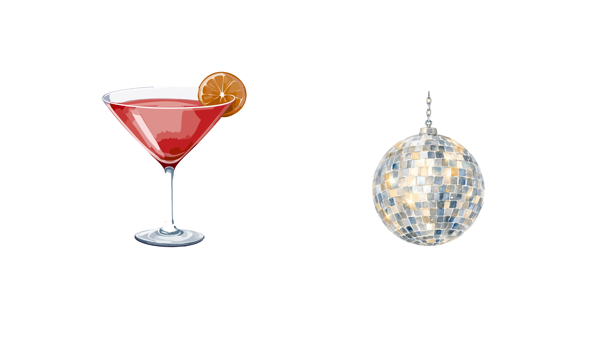
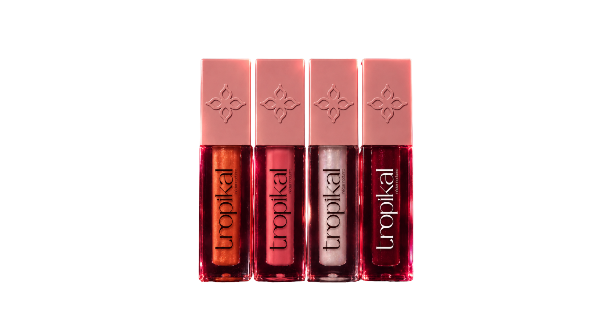
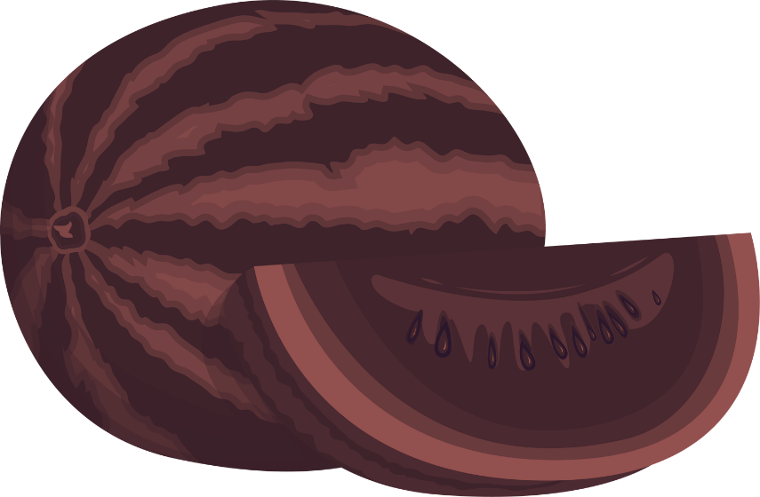
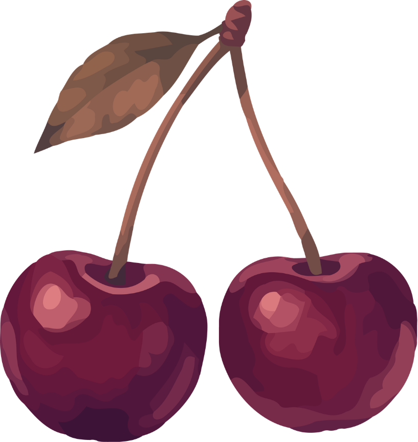
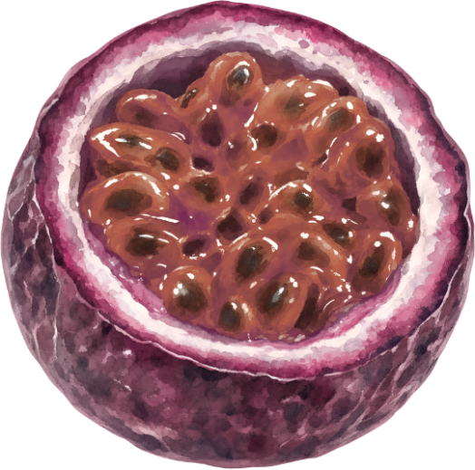
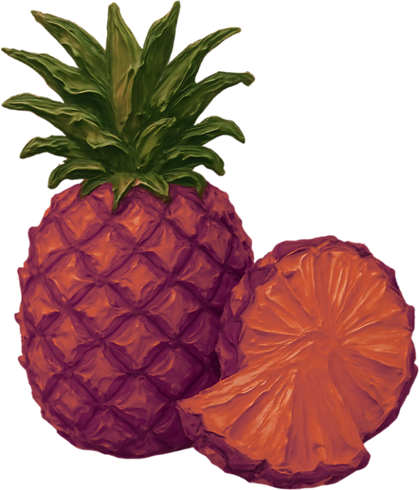
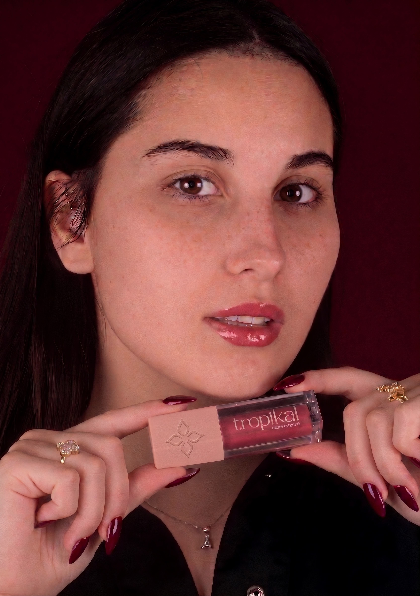
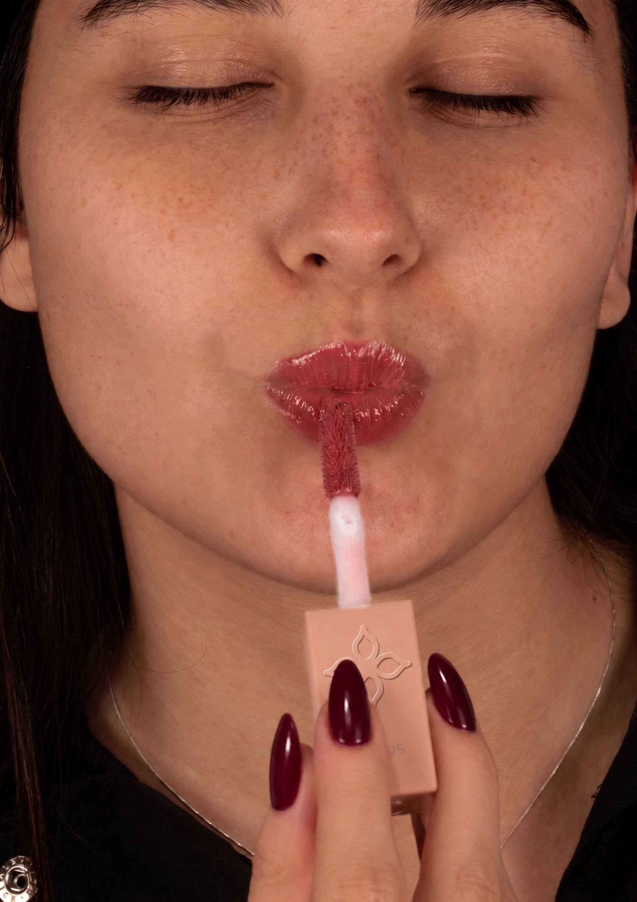
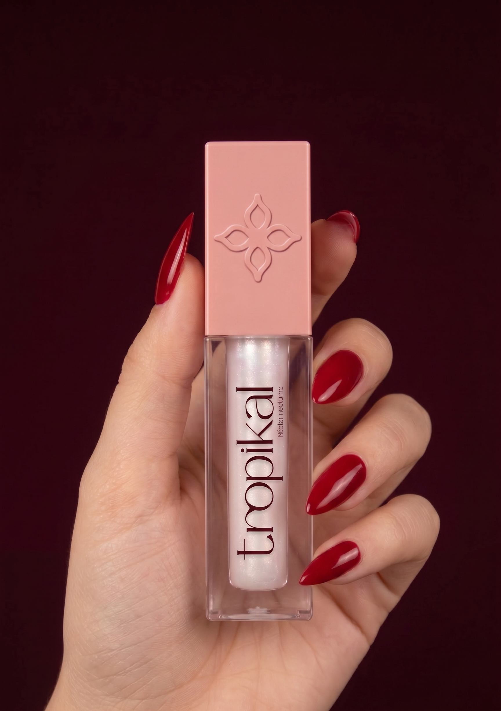

DOSIS es una marca de cosméticos que nace con el propósito de ofrecer productos que acompañen la expresión personal, la creatividad y la identidad de cada persona. Concibe el maquillaje como una forma de experimentar, jugar con la imagen y transmitir diferentes actitudes a través del color, las texturas y los pequeños detalles.
Dentro de este universo surge TROPIKAL, una línea de glosses inspirada en el mundo de los cócteles, los sabores tropicales y la energía de la noche. Su propuesta busca transformar el brillo labial en una experiencia sensorial, donde cada producto representa un sabor, una personalidad y una forma de expresión.
TROPIKAL combina frescura, diversión y sofisticación mediante una estética que integra colores vibrantes, referencias frutales y elementos del universo nocturno. Cada gloss invita a experimentar con el maquillaje, disfrutar de los pequeños momentos y expresar una actitud propia.
TROPIKAL y DOSIS comparten una misma filosofía: entender el maquillaje como una forma de expresión personal, donde cada producto es una pequeña dosis de color, brillo y actitud.


Sandía fresca con un sutil toque cítrico de lima.
Color: Rosado coral - sandía vibrante y translúcido
Cereza madura con un toque cálido de vainilla.
Color: Rojo cereza profundo (tinted)
Maracuyá (fruta de la pasión) ácido y dulce.
Color: Naranja cálido/albaricoque
Coco cremoso y piña dulce tropical.
Color: Translucido mantecoso - blanco perlado con destellos







